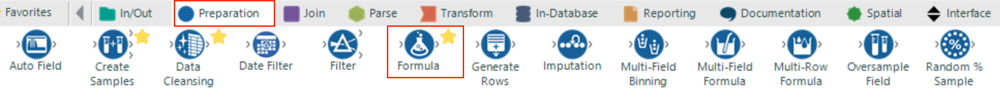
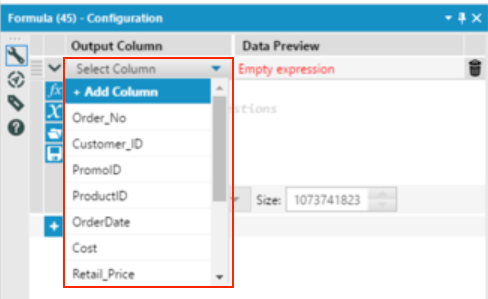
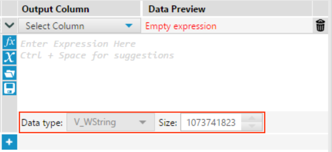
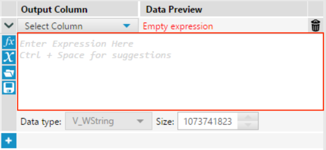
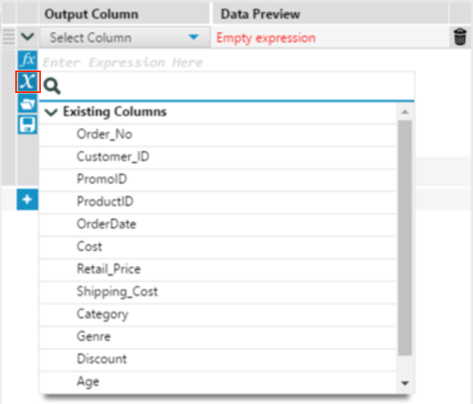
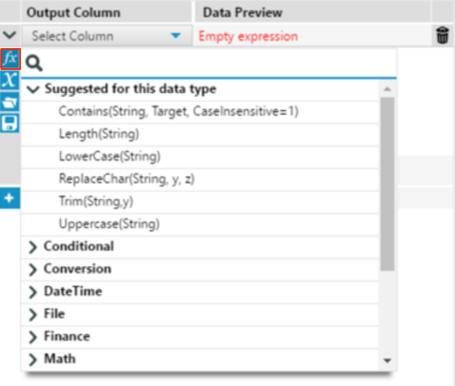
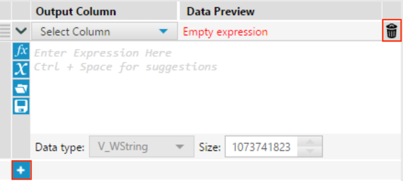

.png)
Once we have imported data into our workflows we will often want to create additional columns of calculated values based on the data from our original sources or modify the values in existing columns. In Alteryx we can use the Formula Tool to do this using basic arithmetic functions along with more advanced functions provided within the tool.
Within the Formula Tool configuration window you can create new columns by clicking on the “Select Column” dropdown menu and selecting “New Column”. You will then be presented with a text box to type in the column name. You can also modify existing columns by clicking on the required column name.
When creating a new column you have the option to define the data type for the column by selecting the data type from the drop down menu along with precision. If modifying the values in an existing column then the data type cannot be changed.
Within the expression editor you can type all of your formulas manually.
To use any existing column in the formula, either type the column name inside brackets i.e. [Sales] or click on the “X” icon and select from the column list.
You can then use the following syntax to perform basic arithmetic operations between the existing columns:
If you are confident with using more advanced functions, you can click on the f(x) icon and insert any Alteryx built-in function that can be modified to your needs. Alteryx provides a large collection of functions to choose from and more details can be found on these in the Alteryx reference documentation here. These can also be typed manually once you are familiar with the function syntax.
Finally to create or modify another column, simply click on the “+” icon or the bin icon to delete the column.
Let’s see how we can use this tool in practice. In our workflow we have the retail price of the products bought and any promotion discount rate that was applied. From this we can use the Formula Tool to calculate the sales value for each order. Let’s do this now.
Step 1:
Drag a Formula Tool from tool pallet to the workspace and connect to the input to the output of the Data Cleansing Tool.

Step 2:
In the configuration window for the Formula Tool select “Add Column” from the “Select Column” dropdown. Name it “sales_value” and type the expression in the expression editor as below or construct it using the “Existing Columns” list.
Step 3:
Finally let’s run the workflow. You should see the “sales_value” field appear in the output of the Formula Tool.